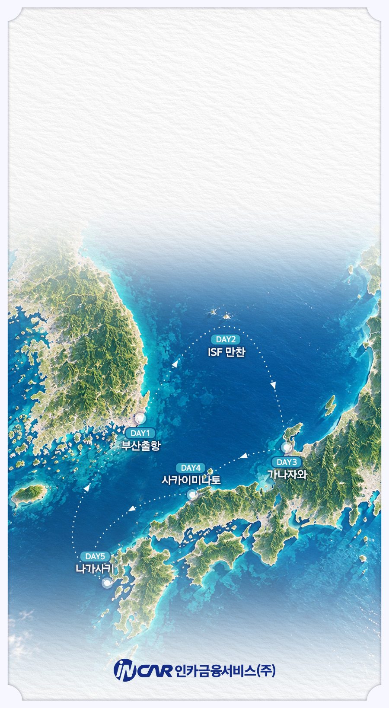
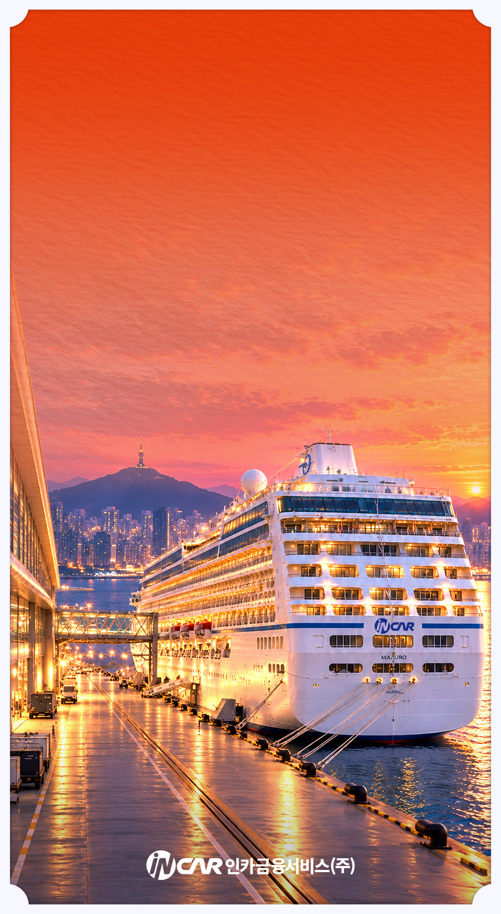
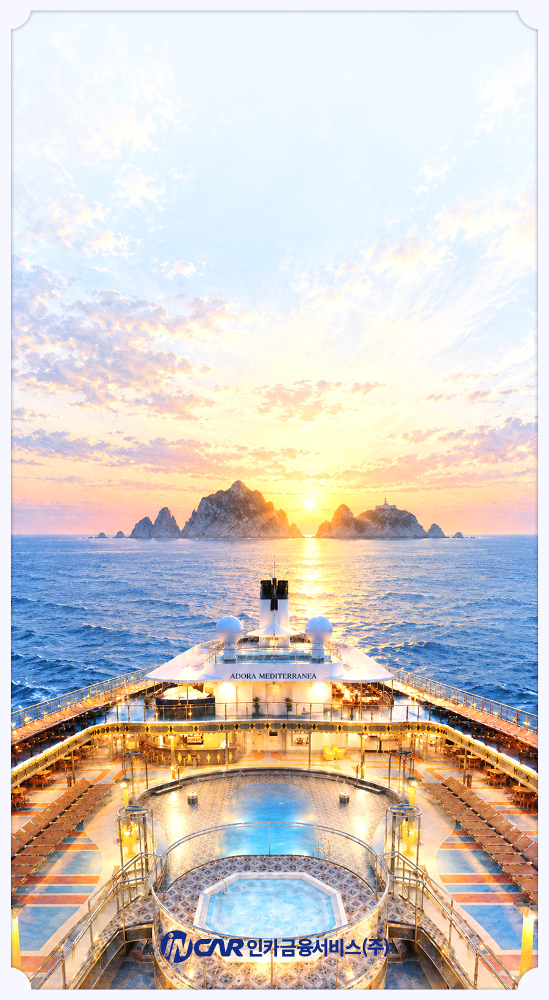
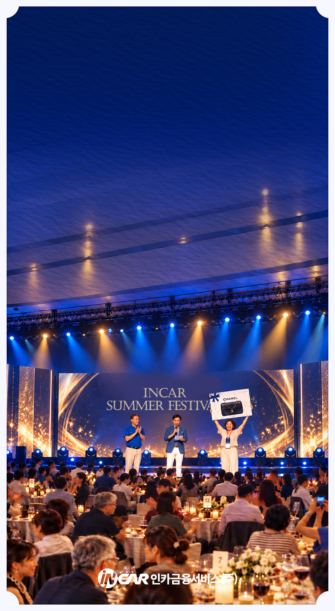
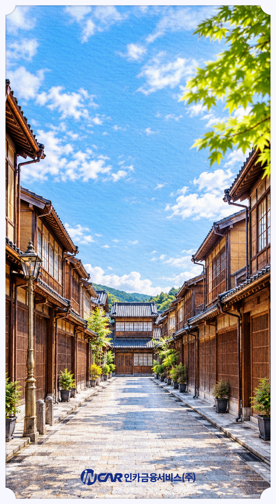
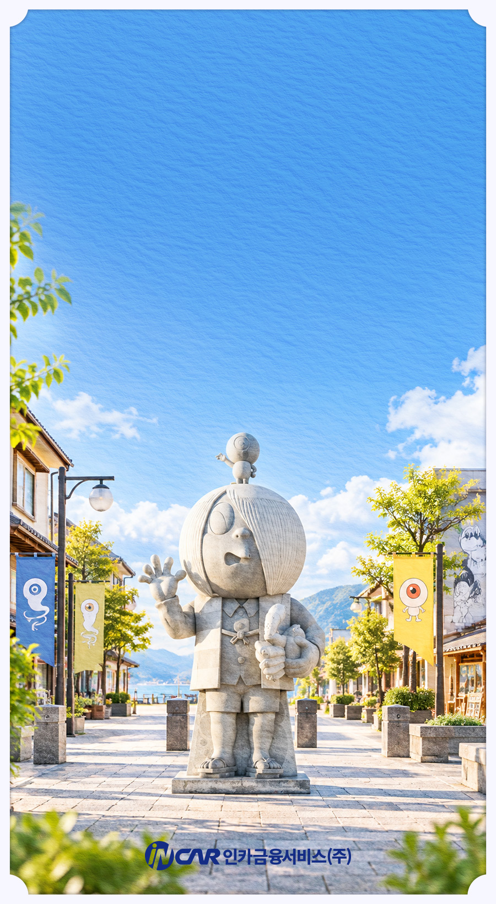
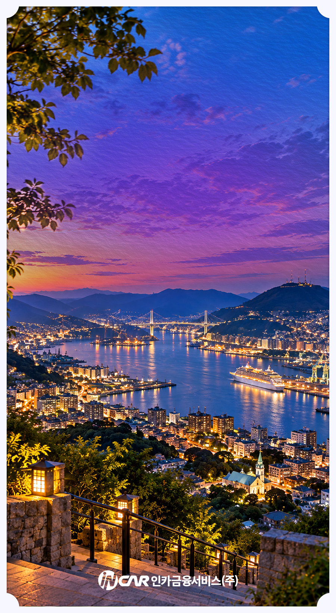
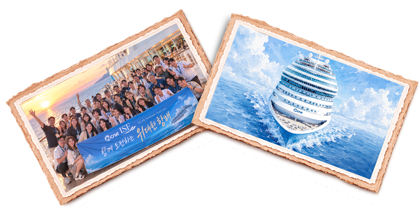

위대한 항해, 그 여정을 소개합니다
인카 ISF 두 번째 가이드북에서는
부산에서 시작해 일본의 세 도시를 거쳐
돌아오는 5박 6일의 항로와 일정을 소개합니다.
새벽 바다에서 마주하는 독도부터
함께 즐기는 선상 만찬,
그리고 가나자와·사카이미나토·나가사키까지.
이 가이드북과 함께 여정을 시작해보시죠!


ROUTE
5박 6일 항로안내
부산에서 출발해 독도를 지나
가나자와·사카이미나토·나가사키까지.
바다 위 특별한 순간과 새로운 풍경을 따라
5박 6일의 항해를 함께 시작합니다.
가나자와·사카이미나토·나가사키까지.
바다 위 특별한 순간과 새로운 풍경을 따라
5박 6일의 항해를 함께 시작합니다.

DAY 1
설렘가득, 부산출항
기다려온 ISF의 첫날,
부산항에서 5박 6일의 여정을 시작합니다.
저녁, 부산을 출발한 크루즈는
밤사이 바다를 건너
다음 날 새벽, 독도를 향해 나아갑니다.
부산항에서 5박 6일의 여정을 시작합니다.
저녁, 부산을 출발한 크루즈는
밤사이 바다를 건너
다음 날 새벽, 독도를 향해 나아갑니다.

DAY2·오전
독도의 일출
새벽녘, 수평선 너머 독도를 마주하며
ISF의 두 번째 하루가 시작됩니다.
바다 위에서 여유로운 아침을 보내고,
크루즈에서만 만날 수 있는 풍경과 함께
천천히 하루를 시작해보세요.
ISF의 두 번째 하루가 시작됩니다.
바다 위에서 여유로운 아침을 보내고,
크루즈에서만 만날 수 있는 풍경과 함께
천천히 하루를 시작해보세요.

DAY2·오후
설렘 가득한 ISF 만찬
둘째 날 오후,
ISF의 하이라이트, 화려한 만찬이 시작됩니다.
압도적인 스케일의 무대와 다채로운 프로그램,
명품 가방 럭키드로우까지!
오직 ISF에서 만날 수 있는 시간을 누려보세요!
ISF의 하이라이트, 화려한 만찬이 시작됩니다.
압도적인 스케일의 무대와 다채로운 프로그램,
명품 가방 럭키드로우까지!
오직 ISF에서 만날 수 있는 시간을 누려보세요!

DAY3·첫번째 기항지
고즈넉한 정취의
고즈넉한 정취의
가나자와
이제, 일본에서의 여행이 시작됩니다.
오랜 시간 이어져 온 거리와 전통이
어우러진 가나자와.
천천히 골목을 거닐다 보면
도시 곳곳에 남아 있는 옛 정취가
자연스럽게 펼쳐집니다.
오랜 시간 이어져 온 거리와 전통이
어우러진 가나자와.
천천히 골목을 거닐다 보면
도시 곳곳에 남아 있는 옛 정취가
자연스럽게 펼쳐집니다.

DAY4·두번째 기항지
이야기가 살아 숨 쉬는
이야기가 살아 숨 쉬는
사카이미나토
두 번째로 만나는 도시 사카이미나토.
거리 곳곳에 개성 넘치는 요괴 조형물,
유쾌한 상상력이 더해진 거리를 따라
곳곳에 숨은 볼거리를 발견하는
재미가 이어집니다.
거리 곳곳에 개성 넘치는 요괴 조형물,
유쾌한 상상력이 더해진 거리를 따라
곳곳에 숨은 볼거리를 발견하는
재미가 이어집니다.

DAY5·세번째 기항지
낭만이 머무는 나가사키
마지막 기항지는 나가사키.
바다를 품은 항구와 언덕을 따라
도시의 불빛이 하나둘 이어집니다.
아름다운 항구도시의 풍경과 함께
일본에서의 마지막 여정을 즐깁니다.
바다를 품은 항구와 언덕을 따라
도시의 불빛이 하나둘 이어집니다.
아름다운 항구도시의 풍경과 함께
일본에서의 마지막 여정을 즐깁니다.

Together
이제, 함께 떠날 시간
가이드북으로 먼저 만나본
5박 6일의 여정이
이제 우리의 시간이 되어 다가옵니다.
함께 도전해 만들어낸 만큼
더 오래 기억될 순간들.
2027년,
인카크루즈에서 함께 만나요.
5박 6일의 여정이
이제 우리의 시간이 되어 다가옵니다.
함께 도전해 만들어낸 만큼
더 오래 기억될 순간들.
2027년,
인카크루즈에서 함께 만나요.
마지막 순간까지 ISF도전,
인카가 함께 응원합니다
1구간
· 각 월 인정실적
40만원 이상
· 3개월 합산 인정실적
130만원 이상
· 시상내용
본인여행(1명)
2구간
· 각 월 인정실적
80만원 이상
· 3개월 합산 인정실적
260만원 이상
· 시상내용
본인여행(1명) + 동반인원(1명)
3구간
· 각 월 인정실적
120만원 이상
· 3개월 합산 인정실적
390만원 이상
· 시상내용
본인여행(1명) + 동반인원(2명)
4구간
· 각 월 인정실적
160만원 이상
· 3개월 합산 인정실적
520만원 이상
· 시상내용
본인여행(1명) + 동반인원(3명)
4구간 초과 달성자(3개월 인정실적 기준)
· 600만원 이상
본인여행(1명)+동반인원3명+100만원
· 800만원 이상
본인여행(1명)+동반인원3명+300만원
· 1천만원 이상
본인여행(1명)+동반인원3명+500만원
각월 실적 미달성자(3개월 인정실적 기준)
· 80만원 이상
80만원 정액 현금시상
· 40만원 이상 80만원 미만
40만원 정액 현금시상
*ISF 달성자 중 여행 불참 또는 여행 진행이 불가 시 1인당 140만원 현금대체 시상
*단, 13회차 유지 평가 후 최종 지급구간 및 지급여부 확정
*인정비율 및 자세한내용은 IIMS 공지사항 참조